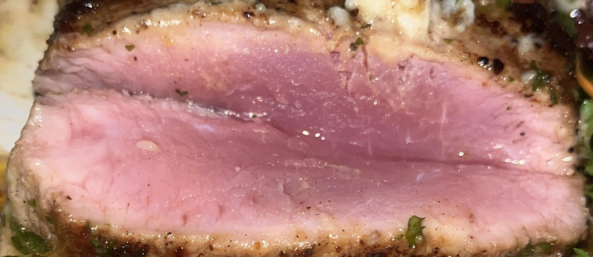
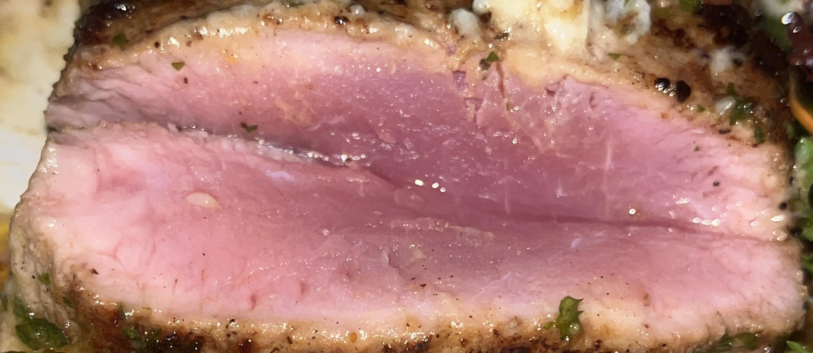
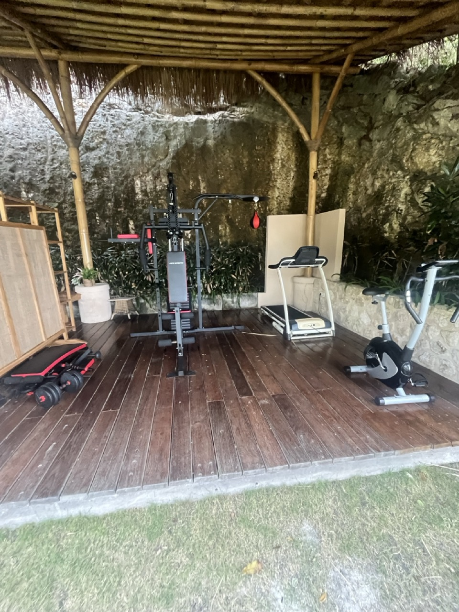

📠Informasi & Lokasi Resort
👋 Kedatangan Saya
Ketika saya tiba di Semaya Beach Resort, lokasi dekat Crystal Bay terlihat menjanjikan. Namun masalah langsung dimulai.
Tidak Ada Air Minum yang Disediakan
Setelah check-in, saya mencari botol air gratis - standar di sebagian besar hotel. Tidak ada sama sekali. Saya menelepon front desk untuk meminta. Mereka mengirimkan dua botol yang disegel dengan tagihan 160,000 Rupiah (sekitar $10 USD).
Ketika saya mengeluh tentang tidak adanya air gratis dan biaya yang sangat mahal, manajemen mengakui mereka "seharusnya" menyediakan air di kamar. Tapi di sinilah situasinya menjadi lebih buruk - mereka mengambil kembali botol yang disegel yang sudah saya pesan dan menggantinya dengan wadah yang bisa diisi ulang.
Di Indonesia, resort bintang 5 seharusnya tidak menyediakan air dalam wadah yang bisa diisi ulang dan tidak disegel. Apakah wadahnya bersih? Apakah airnya disaring dengan benar? Apakah orang yang menanganinya mengikuti protokol kebersihan yang tepat? Semua kekhawatiran ini bisa dihindari sepenuhnya jika mereka hanya menyediakan air yang disegel secara gratis sejak awal, seperti yang dilakukan setiap resort bintang 5 lainnya.

Bukan awal yang baik untuk pengalaman yang seharusnya bintang 5.
🍽️ Restoran - Insiden Ayam Mentah
Malam Ketika Itu Terjadi
Saya dan pasangan memesan daging sapi rare untuk makan malam. Yang tiba di meja kami terlihat salah dari awal, tetapi kami baru menyadari kengerian penuhnya setelah mencicipinya. Tekstur dan rasanya sama sekali tidak seperti daging sapi yang pernah kami cicipi.
Ketika kami mengeluh, Manajer Restoran Andika Putra datang ke meja kami. Meskipun kami berdua bersikeras bahwa ini jelas bukan steak, dia tetap menegaskan berkali-kali bahwa itu adalah daging sapi. Dia mengklaim itu hanya "batch yang buruk" - seolah-olah itu entah bagaimana membuat penyajian daging mentah misterius dapat diterima.
Manajer Restoran Andika Putra
Apa yang Terjadi Selanjutnya
Salah satu dari kami mengalami kram perut parah malam itu juga. Yang lainnya menderita penyakit gastrointestinal serius 48 jam kemudian.
 

Mencari Verifikasi Eksternal
Meragukan indera saya sendiri, saya menghubungi teman saya yang adalah koki profesional. Respons mereka memberi tahu saya bahwa itu pasti bukan steak.


Saya memposting foto itu di situs media sosial yang khusus membahas steak. Dalam hitungan jam, saya menerima puluhan pesan yang semuanya mengkonfirmasi hal yang sama - ini bukan daging sapi. Bukti terakhir? Saya benar-benar di-BAN dari forum karena memposting gambar bukan-steak, dan mereka hanya mengizinkan foto steak!


Timeline Respons Manajemen


Manajer Operasional Sindra Sindrawan
Tes Dapur
Kami pergi ke dapur di mana manajemen memasak apa yang mereka klaim sebagai daging yang sama. Kali ini, itu terlihat dan berasa persis seperti daging sapi - daging sapi yang benar. Namun mereka tetap bersikeras bahwa ini identik dengan apa yang mereka sajikan kepada saya dua hari sebelumnya.

Daging sapi asli (Hari ke-3)
Yang disajikan kepada saya (Hari ke-1)
Analisis AI Membuktikan Kebenaran
Berdiri di dapur, saya membuka ChatGPT dan memotret daging yang baru dimasak. AI langsung mengkonfirmasi bahwa itu pasti daging sapi.

Kemudian saya mengunggah foto makanan asli saya dari dua hari sebelumnya. ChatGPT awalnya mengira itu adalah Ahi Tuna. Ketika saya menjelaskan itu adalah daging, bukan ikan, AI menyimpulkan bahwa itu tidak mungkin daging sapi karena warna dan tekstur yang salah. AI menambahkan bahwa ayam atau babi TIDAK AKAN PERNAH disajikan mentah oleh resort yang bereputasi baik.

Konsekuensi Medis & Penolakan Resort
Saya mengatakan dengan tegas: "Saya tidak akan di-gaslight untuk berpikir saya makan steak. Saya sudah makan steak selama 40 tahun."
Dagingnya adalah ayam atau babi, masing-masing membawa risiko kesehatan yang berbeda ketika dikonsumsi mentah. Karena saya tidak tahu yang mana, saya harus pergi ke dokter untuk tes tinja guna memeriksa parasit. Bagian terburuknya? Resort menolak membayar kunjungan medis, meskipun mereka yang menyajikan daging mentah kepada saya.

🚿 Kondisi Kamar Mandi
Masalah kamar mandi dimulai saat saya menyalakan keran. Air kuning mengalir keluar - bukan sedikit berubah warna, tetapi jelas kuning.
Shower sama-sama mengecewakan. Air "panas" paling-paling hangat dan habis sepenuhnya setelah sekitar 15 menit. Saya lebih suka mandi lama dan santai saat berlibur - itu tidak mungkin di sini.
Mimpi Buruk Terbuka
Toilet memiliki desain terbuka tanpa privasi suara sama sekali. Ini biasanya tidak akan menjadi masalah besar, tetapi ketika Anda menderita masalah perut parah setelah makan ayam mentah, itu menjadi mimpi buruk. Tetangga saya bisa mendengar setiap suara memalukan, dan saya bisa mendengar mereka berbincang dari kamar mandi saya.

Yang memperburuk keadaan, mereka menempatkan kamar merokok dan non-merokok langsung bersebelahan. Berkat desain terbuka, asap rokok terus-menerus masuk ke kamar non-merokok kami.

🧹 Standar Kebersihan
Staf kebersihan, meskipun ramah, memiliki satu masalah kebersihan besar - mereka membersihkan kamar sambil memakai sepatu luar ruangan.

Mengapa staf memakai sepatu di dalam saat membersihkan? Ini adalah sepatu yang sama yang mereka pakai di luar, berjalan di jalan dan trotoar. Mereka kemudian membawa semua kotoran dan kontaminasi itu ke kamar kami sambil "membersihkannya". Standar kebersihan dasar benar-benar diabaikan.
🚴 Bahaya Keselamatan Sewa Sepeda
Resort menawarkan sewa sepeda, tetapi sepedanya adalah perangkap maut. Sepedanya tua dengan ban kempes dan standar samping yang rusak sehingga terus jatuh.

Bahaya nyata datang dari rem - mereka bersuara nyaring dan hampir tidak berfungsi. Tidak ada lampu atau helm yang disediakan, yang sangat berbahaya karena jalan-jalan lokal tidak memiliki penerangan di malam hari.
Lihat sendiri:
💪 Fasilitas Kebugaran
"Gym" ini menggelikan. Terdiri dari satu mesin kecil yang tidak stabil dengan kapasitas berat yang sangat rendah dan beberapa "dumbbell" plastik yang terasa seperti mainan. Sama sekali tidak cocok untuk rutinitas kebugaran yang nyata.
✋ Penghinaan Terakhir: Sisir yang Patah
Tepat sebelum check-out, saya menggunakan sisir kayu yang disediakan resort. Sisir itu patah menjadi dua.
Setelah menghabiskan waktu di Thailand, saya tahu ini adalah pertanda buruk yang mengerikan. Dalam budaya Thailand, sisir yang patah saat digunakan adalah pertanda buruk yang serius - peringatan akan kemalangan. Takhayul mengatakan itu harus segera dibuang atau nasib buruk akan terwujud.
Ini merangkum dengan sempurna seluruh pengalaman menginap - bahkan sisir resort pun terkutuk.

Resort ini bahkan tidak bisa menyediakan sisir yang berfungsi atau sepeda yang aman, apalagi makanan yang aman, air bersih, atau peralatan gym yang memadai.
Penilaian Keseluruhan
SAMA SEKALI TIDAK DIREKOMENDASIKAN
Pada akhirnya, saya tidak sabar untuk meninggalkan resort bintang 1 yang menggelikan ini.
Masalah Sebenarnya: Manajemen
Satu-satunya hal yang menyelamatkan adalah staf pelayanan yang baik hati. Ini adalah resort bintang 1 sebagai hasil langsung dari manajemen bintang 1.
Kegagalan Manajemen:
• Manajer Restoran Andika Putra - Berbohong langsung kepada tamu tentang ayam mentah
• Manajer Operasional Sindra Sindrawan - Awalnya jujur, kemudian mundur di bawah tekanan
• Tidak ada manajemen senior yang tersedia di lokasi selama krisis
• Mencoba melakukan gaslight kepada tamu tentang insiden keselamatan makanan
• Nol akuntabilitas untuk pelanggaran kesehatan
• Kegagalan total dalam standar hospitalitas dasar
Resort ini mewakili semua yang salah dengan manajemen hospitalitas - mengutamakan muka daripada keselamatan tamu, berbohong alih-alih bertanggung jawab, dan beroperasi dengan standar yang tidak dapat diterima di motel pinggir jalan, apalagi resort yang mengklaim menawarkan pengalaman premium.